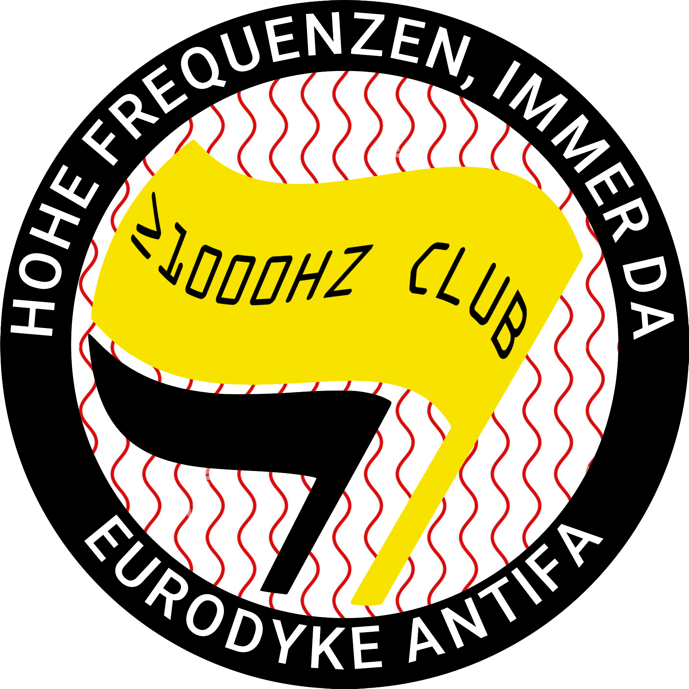

✯ [NORBERG IN MIMERLAVEN] info TBA /// Norberg festival, Norberg ~
✯ [Samlingen] live on-air compositions, 26-04-26, 16:00 - 18:00 /// Project by Adam Fored, also featuring Malte Dahlberg, Niklas Dahlqvist och Theo Kentros. Live on Radio Sydväst (88.9 MHz), broadcasted from Hägerstensåsens Medborgarhus ~ Project website
✯ [Laikatonal #2 release party] live solo performance as part of a zine release with all profits going to Palestinagrupperna, 18-04-26 /// Kummelholmen, Stockholm ~ Fb event
✯ [Finissage med Fylkingen – Saggy Wednesday], solo set, 01-11-25 /// Verkligheten, Umeå ~ Event link
✯ [The extrauniversal clouds – eurodyke record release party !] 11-07-25 /// + Paul Purgas and april forrest lin 林森 (installation), Fylkingen, Stockholm ~ Event link
✯ [a power-point performance in five acts] 29-11-24 /// Fantasia x Fylkingen, Fylkingen, Stockholm ~ Event link
✯ [An Alternative to Kulturnatt (where the embassy of israel isn't welcome)] 20-04-24 /// Loke Risberg, Ilaria Capalbo, Ingrid Schyborger, eurodyke, Höjden Studios, Stockholm
✯ [Hästera] 23-02-24 /// Loke Risberg, Ilaria Capalbo, eurodyke, alt_R_jazz (vinterjazz 2024), Aarhus ~ FB event
✯ [Fylkingen x Cafe OTO] 06-12-23, 19:30 /// Amina Hocine + Lise-Lotte Norelius + euroDYKE + John Chantler / Daniel M Karlsson (duo) + Paul Pignon, CAFE OTO, London! ~ Oto website event
✯ [Två duos blir en trio!] 25-11-23, 18:30 /// Ilaria Capalbo, Loke Risberg, eurodyke, Kungliga Musikaliska Akademin, Stockholm ~ fb-event
✯ [Perkis/Risberg/Mol] 04-10-23, 19:30 /// Tim Perkis, Loke Risberg, eurodyke, Live@brÖtz, Göteborg ~ brÖtz
✯ [high frequency extrauniversal cloudifications] 18-08-23 21:00 /// Maltifestgalan 2023, Fylkingen, Stockholm ~ fb event
✯ [LOKE RISBERG & EURODYKE] 14-07-23 20:00 /// Loke Risberg, eurodyke, Kontinent Dalsland 2023, Dals-Långed ~ program
✯ [random pulsating charlemagnemaximal] 08-04-23 /// eurodyke, Fylkingen, Stockholm ~ artiface II: Easter Feast
✯ [EURO-PEARL TRANSIT] 18-08-22 /// UNM 2022 Rejkjavík: co·structing, in the Grótta Lighthouse (omg!!), Rejkjavík, Iceland ~ fb event
festival website✯ [DDM LIVE] 27-05-22 /// Fylkingen, Stockholm ~ info
✯ [SAMPLE & HOLD] 30-03-22 /// Lilla Salen, Royal College of Music, Stockholm
✯ [EURO-PEARL TRANSIT] 16-04-21 /// Lilla Salen, Royal College of Music, Stockholm
